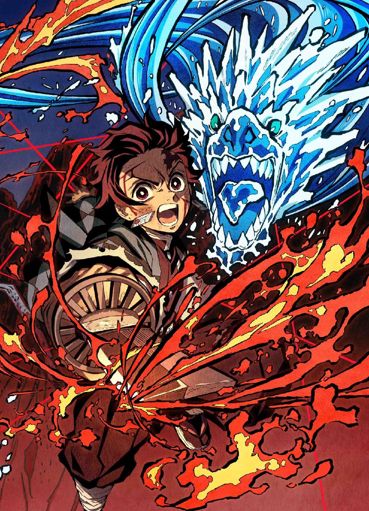
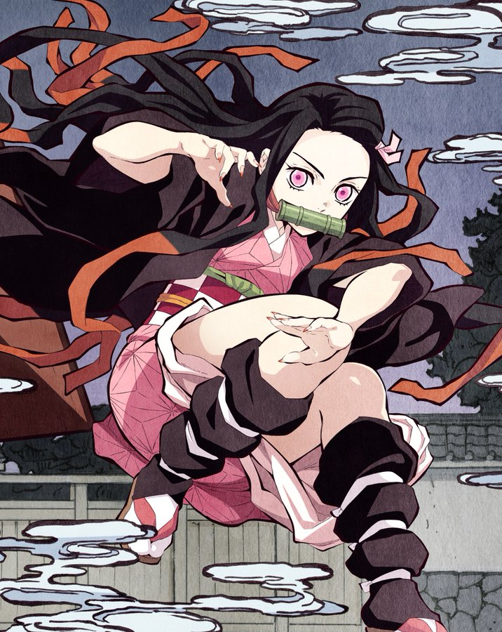
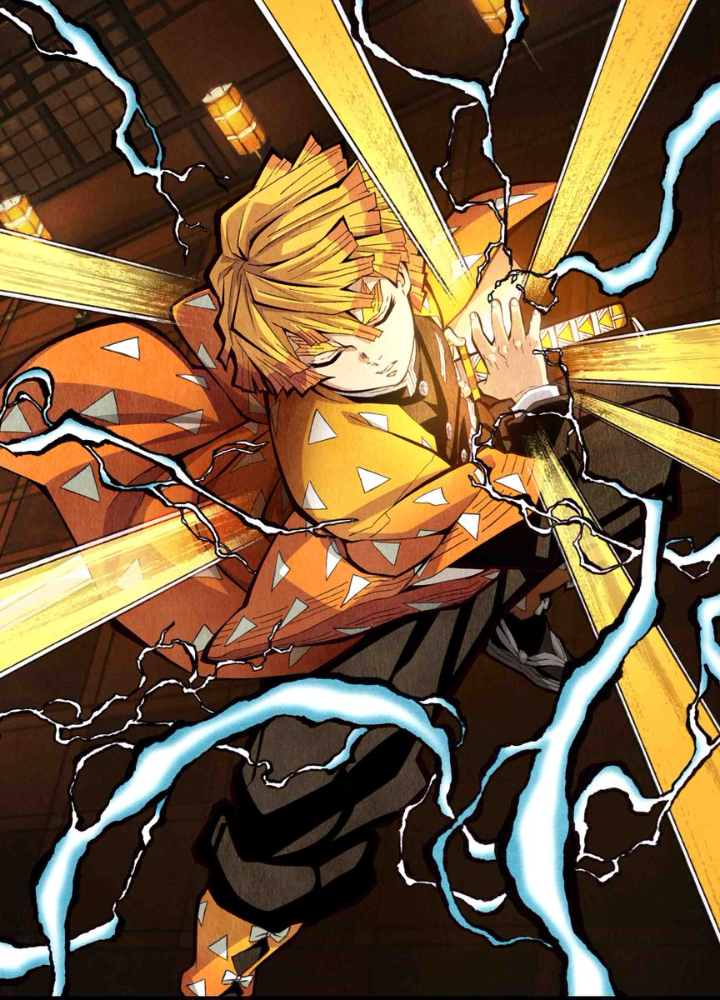
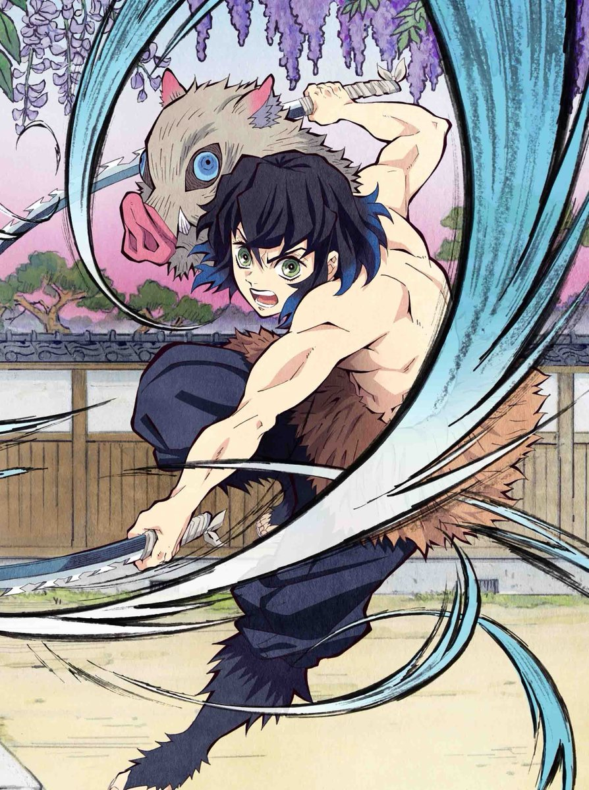
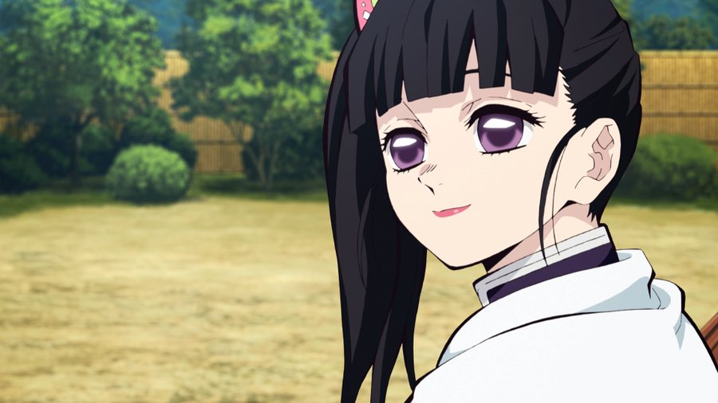

Webサイト作成中
蟲の呼吸
蝶の舞
...戯れ
鬼殺隊とは
「鬼殺隊」は、人間を鬼から守るために作られた政府非公認の組織である。
-
日輪刀
鬼殺隊の隊士は，日輪刀(にちりんとう)という武器を装備します。鬼を倒すには日光を浴びせるか，日輪刀という日本刀で鬼の頸を斬るしかありません。日輪刀は陽光山で採取できる猩々緋砂鉄(しょうじょうひさてつ)と猩々緋鉱石(しょうじょうひこうせき)から作られています。刃元に刻まれているのは「悪鬼滅殺」の4文字です。 日輪刀は持ち主によって刀の色や特性が変化するため、「色変わりの刀」とも呼ばれます。その色によって、持ち主がどの流派へ適性があるか見抜くことが可能です。
-
継子(つぐこ)
鬼殺隊の中でも次期「柱」としての才能が見込まれた隊士は、「柱」の剣士の下で修行する事が可能です。そのような隊士は継子(つぐこ)と呼ばれます。「蟲柱」である胡蝶しのぶ(こちょうしのぶ)は、炭次郎と同期の栗花落カナヲ(つゆりかなを)を、継子として育成しています。
-
痣(あざ)
戦国の時代には「始まりの呼吸の剣士」と呼ばれる者達が鬼の紋様に似た痣を発現させ、鬼を追い詰めたという伝承が残っています。「痣(あざ)」が発言した者は高い身体能力を発揮する事が可能です。痣が発現する条件には「体温が39℃を超える」かつ「心拍数が200を超える」の2つが存在します。 作中では、炭治朗が最初に炎の形の痣を発現させました。その後、他の「柱」の隊士達にも様々な形状の痣が現れています。
-
全集中の呼吸
鬼殺隊の隊士は、一度に大量の酸素を取り込み身体能力を上昇させる「全集中の呼吸」という能力を持っています。「柱」は、その「全集中の呼吸」を極めた剣士達です。「水の呼吸」を極めた者は「水柱」、「炎の呼吸」を極めた者は「炎柱」という肩書きを持ちます。
鬼殺隊員
-
竈門炭治郎(かまどたんじろう)
『鬼滅の刃』の主人公。遍く万象を照らす日輪を心に宿した少年。 竈門家の長兄として、父炭十郎亡き後の家族の大黒柱となって家業である炭焼きを営み、つつましくも幸せな生活を送っていた。 しかしある日、いつものように麓の町へと炭を売りに降り、いつものように山の家へと帰ろうとした夕暮れ、知り合いの老人である三郎爺さんに引き止められる。
ヒノカミ神楽
円舞 -
竈門禰豆子(かまどねずこ)
漫画『鬼滅の刃』のヒロインで、主人公・炭治郎の妹。 長い髪の数か所を部分的に結び額を出し、麻の葉文様の着物に市松柄の帯を締めた少女。 家族と共に慎ましやかながらも幸せな生活を営んでいたが、唐突に、そして理不尽に訪れた残酷な災厄により人ならざる鬼となってしまう。
血鬼術．．．爆血!!
-
我妻善逸(あがつまぜんいつ)
主人公・炭治郎の同期に当たる鬼殺の剣士。 炭治郎らが赴いた鬼殺隊士の最終選別に同じくして立ち向かい、たった五人生き残った精鋭隊士の一人である。 ぱっつんを重ねたような金色の短髪で、眉尻が二股に割れた太い垂れ眉に、クマのある目元が陰鬱な印象を与える。
雷の呼吸壱の型
霹靂一閃 -
嘴平伊之助(はしびらいのすけ)
主人公・炭治郎の同期に当たる鬼殺の剣士。 炭治郎らが赴いた鬼殺隊士の最終選別に同じくして立ち向かい、たった五人生き残った精鋭隊士の一人である。 「野生児」という言葉では片付けられない『獣』であり、常時上半身を露出して、頭には猪から剥いだ頭皮を被った二刀流の剣士。
獣の呼吸壱ノ牙
穿ち抜き -
栗花落カナヲ(つゆりかなを)
主人公・炭治郎の同期剣士の一人。 サイドテールの髪型や紫色の瞳・スカートやブーツ等の洋服が特徴的である。身に着けている羽織は無地の単純なもの。 炭治郎と同日に最終選別に挑み、これを生き残った五人の内の一人だが、炭治郎を含めた他の三人（伊之助は集合場所にいなかったため不明）が満身創痍であったのに対して、カナヲは傷どころか土汚れひとつなく涼しい顔で選別を突破していた。 後日の「那田蜘蛛山編」で再登場した時には事後処理部隊『隠(かくし)』の指揮を任されており、胡蝶しのぶの“継子”である事が明かされた。
花の呼吸終の型彼岸朱眼